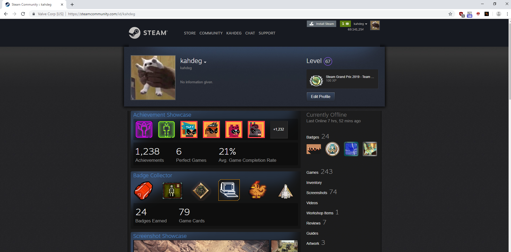
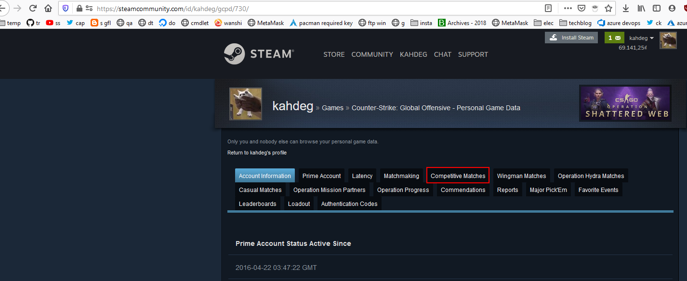
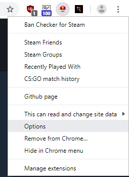

Cách xem lịch sử matchmaking
Cách bình thường được cung cấp bởi valve
- vào profile của m

- vào game

- vào lịch sử matchmaking

Cách setup plugin để xem stat matchmaking
- cài plugin
ban check for steam
- lấy api key

nếu nó hỏi domain thì để localhost vào
- vào option

- vào extension options
- lưu key

- làm theo Cách bình thường được cung cấp bởi valve